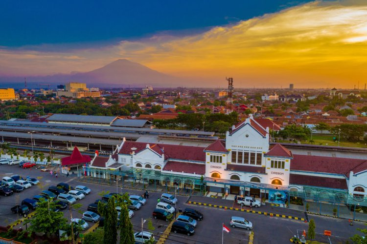
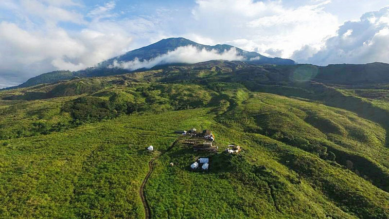
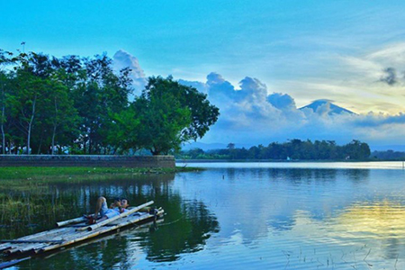
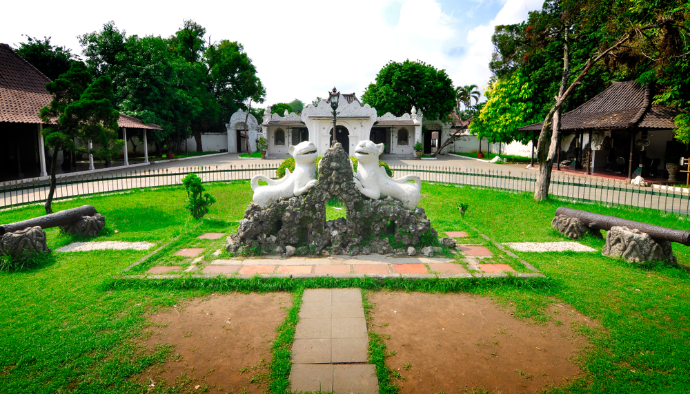

Sejarah

Kota Cirebon adalah salah satu kota yang berada di Provinsi Jawa Barat, Indonesia. Kota ini berada di pesisir
utara Pulau Jawa atau yang dikenal dengan jalur pantura yang menghubungkan Jakarta-Cirebon-Semarang-Surabaya.
cirebon juga dikarenakan sejak awal mata pecaharian sebagian besar masyarakat adalah nelayan, maka berkembanglah
pekerjaan menangkap ikan dan rebon (udang kecil) di sepanjang pantai, serta pembuatan terasi, petis dan garam.
Dari istilah air bekas pembuatan terasi atau yang dalam bahasa Cirebon disebut (belendrang) yang terbuat dari
sisa pengolahan udang rebon inilah berkembang sebutan cai-rebon (bahasa sunda : air rebon), yang kemudian menjadi cirebon.
Geografis

Kota Cirebon terletak pada lokasi yang strategis dan menjadi simpul pergerakan transportasi antara Jawa Barat dan Jawa Tengah.
Letaknya yang berada di wilayah pantai menjadikan Kota Cirebon memiliki wilayah dataran yang lebih luas dibandingkan dengan wilayah
perbukitannya. Luas Kota Cirebon adalah 37,54 km2 dengan dominasi penggunaan lahan untuk perumahan (32%) dan tanah pertanian (38%).
Wilayah Kotamadya Cirebon Sebelah Utara dibatasi Sungai Kedung Pane, Sebelah Barat dibatasi Sungai Banjir Kanal, Kabupaten Cirebon, Sebelah
Selatan dibatasi Sungai Kalijaga, Sebelah Timur dibatasi Laut Jawa.
Kota ini dilalui oleh beberapa sungai di antaranya Sungai Kedung Pane, Sungai Sukalila, Sungai Kesunean, dan Sungai Kalijaga.
Wisata
Berikut ini beberapa destinasi wisata Cirebon yang bisa Anda jadikan referensi untuk pelesiran di kala Lebaran.
Disini saya memberikan 2 referensi tempat wisata.
Setu Sedong

Suasana alam di Setu Sedong mampu memberi rasa nyaman bagi suasana hati dan pikiran. Pada sisi waduk sebelah barat
yang berbatasan dengan jalan telah dibuat dinding beton untuk mencegah air danau agar tidak mengalir ke jalan.
Disepanjang dinding beton ini menjadi tempat favorit pengunjung untuk bersantai menikmati tenangnya air danau.
Bahkan tidak sedikit pengunjung yang punya hobi memancing menjadikan sepanjang sisi waduk di pinggir jalan ini sebagai
spot untuk memancing.
Keraton Kesepuhan

Keraton Kasepuhan Cirebon memiliki arsitektur yang unik. Meski sebagai kesultanan Islam, beberapa elemen bangunan di keraton
ini dipengaruhi Hindu. Misalnya pada bentuk gapura dan bangunan lainnya. Pengaruh Tiongkok juga tampak di keraton ini. Hal itu
tampak pada ornamen di dinding keraton, yang menggunakan keramik dan beragam motif yang khas.